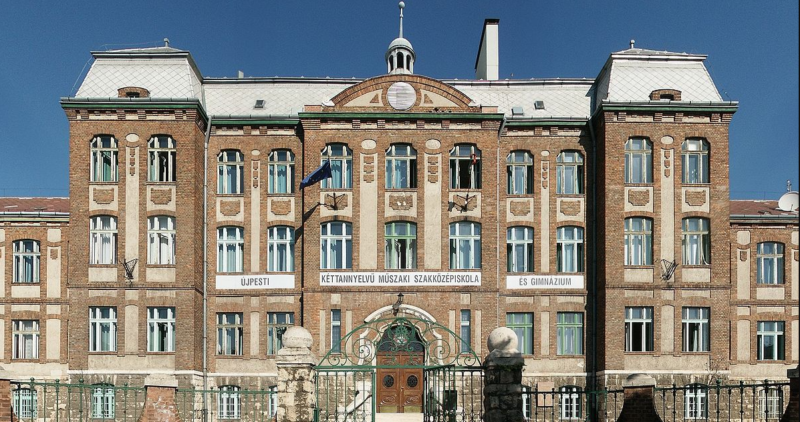
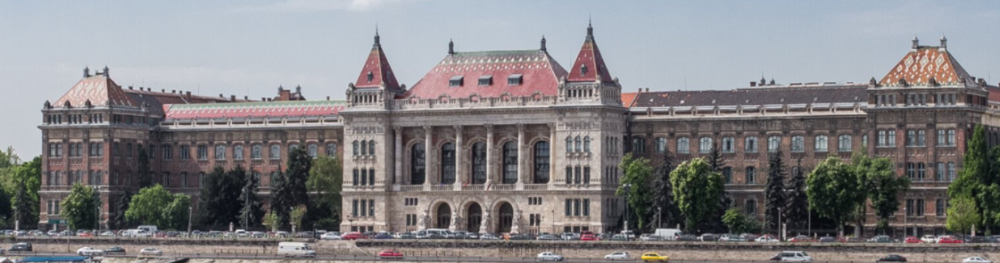

Rólam: Budapesten élek. Többek között mivel már korán észrevettük a műszaki beállítottságomat, Újpestre jártam egy műszaki szakgimnáziumba. Részt vettem tübb szakmai versenyen(pl.:ÁSZÉV).
Jelenleg a Budapesti Műszaki és Gazdaságtudományi Egyetem Gépészmérnöki Karán tanulok.
Before
After
